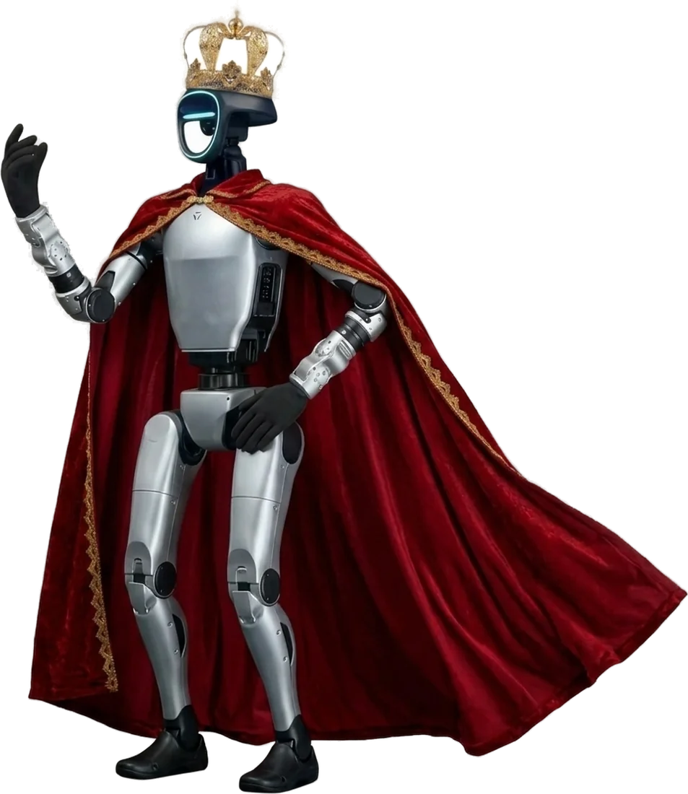

Messen & Ausstellungen
Messe-Roboter mieten — der Standmagnet für Ihre Halle
Zwischen hunderten Ständen entscheiden Sekunden über Aufmerksamkeit. Ein humanoider Messe-Roboter, der läuft, spricht und Audienzen gewährt, ist der Grund, warum Besucher den Gang wechseln — und an Ihrem Stand stehen bleiben statt beim Wettbewerber.
- Operator inklusive
- Versichert
- Deutsch & English
- Ab 2.500 € zzgl. USt.

Ihre Vorteile
Warum sich der Auftritt rechnet
Stopp-Effekt garantiert
Ein 1,30 m großer König-Roboter durchbricht jede Banner-Blindheit. Wer stehen bleibt, ist ansprechbar — Ihr Vertrieb übernimmt.
Menschentraube = Standmagnet
Um den Roboter bildet sich binnen Minuten eine Traube. Menschen ziehen Menschen an — Ihr Stand wirkt wie der wichtigste der Halle.
Viraler Content inklusive
Praktisch jeder Besucher filmt. Jedes geteilte Video trägt Ihren Stand in Feeds, die Anzeigen nie erreichen.
Planbare Frequenz-Peaks
Feste Show-Slots im Standprogramm erzeugen kalkulierbare Besucherwellen — ideal für Terminplanung des Vertriebsteams.
Lead-Maschine am Stand
„Was kann der denn?“ ist der einfachste Gesprächseinstieg der Messe — und jedes Gespräch ein potenzieller Lead.
Komplett betreut
Operator, Sicherheitskonzept, Versicherung, Abstimmung mit der Messeleitung — alles inklusive.
So läuft es ab
Vom Erstkontakt zum Auftritt
Ob Weltleitmesse in Hannover, Düsseldorf oder Frankfurt, gamescom in Köln oder Regionalmesse: Der Einsatz wird auf Ihre Standfläche und Ihre Ziele zugeschnitten. Empfangschef am Standrand, Show-Act zu festen Zeiten oder Produkt-Botschafter, der Ihre Neuheit präsentiert — Sie wählen das Format, wir liefern Drehbuch, Operator und Technik. Benötigt werden nur wenige Quadratmeter ebene Fläche, Strom und Internet.
Anfrage
Event, Datum und Ort kurz schildern — Sie erhalten zeitnah ein individuelles Angebot.
Abstimmung
Ablauf, Sicherheitskonzept und Technik werden gemeinsam festgelegt.
Auftritt
Ludwig II. kommt mit Operator und Equipment — betreut von Aufbau bis Abbau.
Einsätze ab 2.500 € zzgl. USt.Das konkrete Angebot richtet sich nach Format, Dauer und Ort — Operator, Anreise, Technik und Versicherung inklusive. Alle Details: Preise & Pakete.
Häufige Fragen
Messen & Ausstellungen — FAQ
Was kostet ein Messe-Roboter pro Tag?
Einsätze beginnen ab 2.500 € zzgl. USt. (kompaktes Format ab ca. 2 Stunden). Ganze Messetage werden individuell kalkuliert — mit geplanten Akkupausen als Programmstruktur. Sie erhalten immer ein individuelles Angebot.
Muss der Einsatz mit der Messeleitung abgestimmt werden?
In aller Regel ja — das übernehmen wir gemeinsam mit Ihnen. Sicherheitskonzept und versicherter Betrieb sind Teil des Angebots und überzeugen jede Messeleitung.
Wie viel Platz braucht der Roboter am Stand?
Wenige Quadratmeter ebene Fläche genügen. Der Bewegungsradius wird an Ihre Standgröße angepasst — vom Reihenstand bis zur Messehalle.
Funktioniert das auch auf internationalen Messen?
Ja — Ludwig interagiert live auf Deutsch und Englisch und ist damit für internationales Fachpublikum ideal.
Vertiefen
Ratgeber zum Thema
Roboter auf der Messe: So wird Ihr Stand zum Besuchermagneten
Zwischen hunderten Ständen entscheiden Sekunden über Aufmerksamkeit. Warum ein humanoider Roboter der wirksamste Standmagnet ist — und wie Sie ihn strategisch einsetzen.
Weiterlesen →Messestand-Ideen 2026: 10 Wege, mehr Besucher an Ihren Stand zu ziehen
Standmiete bezahlt, und trotzdem laufen alle vorbei? Zehn erprobte Ideen, wie Ihr Messestand 2026 zum Besuchermagneten wird — ehrlich bewertet nach Aufwand und Wirkung.
Weiterlesen →Humanoiden Roboter mieten: Kosten, Ablauf & Checkliste 2026
Was kostet ein humanoider Roboter auf Ihrem Event, wovon hängt der Preis ab und wie läuft eine Buchung ab? Der komplette Guide mit Preisen, Preisfaktoren und Checkliste.
Weiterlesen →Anfrage & Buchung
Roboter anfragen
Schildern Sie kurz Ihr Event — Sie erhalten zeitnah ein individuelles Angebot. Keine Warteschleifen: Das Team antwortet schnell, der KI-Assistent (Chat unten rechts) rund um die Uhr.
Anfrage & Buchung
Bereit für eine Audienz?
Schildern Sie Ihr Event in zwei Sätzen — Sie erhalten zeitnah ein individuelles Angebot. Einsätze ab 2.500 € zzgl. USt., Operator und Versicherung inklusive.